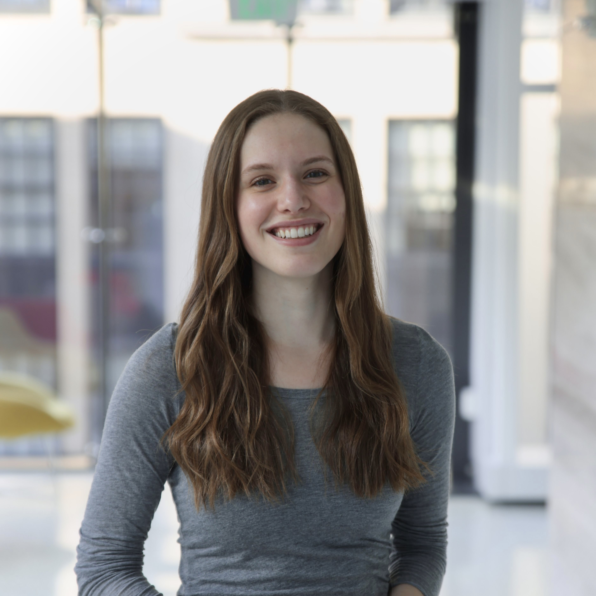

About
Hi! I'm Annika, a PhD student in mechanical engineering at MIT.
I'm working with Professor Ellen Roche in the Therapeutic Technology Design and Development (TTDD) Lab, where my research focuses on both design and control for minimally invasive robotic surgical systems. I previously worked on several hardware design and integration projects in the Biomimetic Robotics Lab, Raman Lab, and Culpepper Lab at MIT, as well as the Tissue Engineering and Biofabrication Lab at ETH Zürich.
Thank you to the Hertz Fellowship and NSF GRFP for supporting my graduate work, and to the ThinkSwiss Research Scholarship for supporting my 2024 undergraduate research abroad.
Feel free to write me at annikam@mit.edu with any questions about the projects on this website, or if you're interested in collaborating!